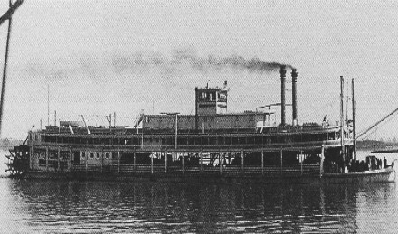

Mississippi River
1857-1861
"There warn't no home like a raft, after all. Other places do seem so cramped up and smothery, but a raft don't. You feel
mighty free and easy and comfortable on a raft." Mark Twain, Adventures of Huckleberry Finn

picture courtesy of Mark Twain
"The scenery all day has been just what it always was in my time--everlasting stretches of almost unbroken
forests on both sides of the river amid soundless solitude. Here and there a miserable cabin or two standing
in small opening on the gray and grassless banks of the river...This boat is about 300 feet long. 49 feet wide
9 1/2 feet depth of hold. All bed-rooms aft the middle gangway, each with 2 beds. Six bridal chambers.
Dimentions of pilot house: 14 feet square 8 1/2 high. 4 window sashes on each of three sides. Double-circle
wheel. Nickel plated bell-pull: Electric lights worked from the bell-pull. Compass & chartbox. Tubes to hear
the engine bells through. Steam radiator to heat pilot house, instead of stove." from journal entry, Mississippi,
April-May 1882, as quoted in Mark Twain's Notebooks and Journals, Vol. II
"The scenery all day has been just what it always was in my time--everlasting stretches of almost unbroken
forests on both sides of the river amid soundless solitude. Here and there a miserable cabin or two standing
in small opening on the gray and grassless banks of the river...This boat is about 300 feet long. 49 feet wide
9 1/2 feet depth of hold. All bed-rooms aft the middle gangway, each with 2 beds. Six bridal chambers.
Dimentions of pilot house: 14 feet square 8 1/2 high. 4 window sashes on each of three sides. Double-circle
wheel. Nickel plated bell-pull: Electric lights worked from the bell-pull. Compass & chartbox. Tubes to hear
the engine bells through. Steam radiator to heat pilot house, instead of stove." from journal entry, Mississippi,
April-May 1882, as quoted in Mark Twain's Notebooks and Journals, Vol. II

Back to Hannibal | On to Virginia City